Se desarrollaron dos aplicaciones independientes con Next.js 16.4.3, React 19.3.0, TypeScript y Tailwind CSS 4. El primer ejercicio demuestra componentes reutilizables. El segundo implementa un dashboard con shadcn/ui y la lógica de negocio solicitada en la tarea. El código compila, pasa ESLint y las nueve pruebas de reglas de negocio.
Button utiliza CSS Modules para el efecto de onda, gradientes, transiciones y spinner. Card y Badge emplean utilidades de Tailwind para estructura, colores y tamaños. Input combina etiqueta flotante y animación de error mediante CSS Modules con disposición adaptable y espaciado mediante Tailwind. Se corrigió la asociación entre etiquetas y campos, y se reforzó la validación del correo electrónico.
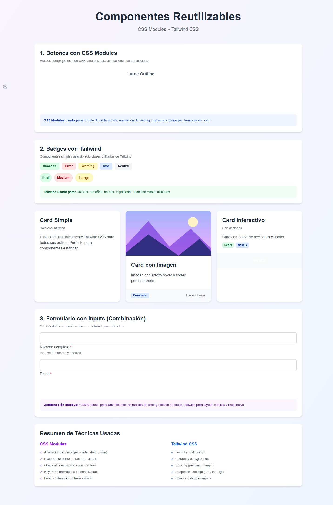
La combinación permite separar los efectos específicos del componente de las decisiones generales de diseño. Los módulos aíslan los estilos de onda, giro y etiqueta flotante para evitar colisiones entre componentes. Las utilidades de Tailwind permiten construir las tarjetas, rejillas, colores y tamaños sin escribir una hoja global extensa. En el formulario se observa esta integración: la etiqueta cambia de posición con CSS y el contenedor conserva la estructura responsive con clases utilitarias. Conviene reservar CSS Modules para los comportamientos visuales particulares y mantener el diseño habitual con Tailwind para facilitar el mantenimiento.
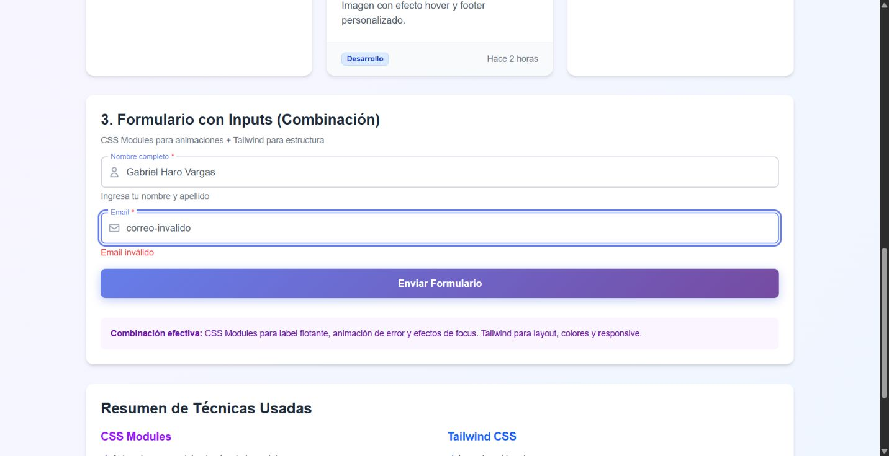
Se instalaron mediante el CLI oficial los componentes button, card, input, label, dialog, tabs, select, badge, avatar, switch, table, checkbox, spinner, alert, calendar, pagination, popover y textarea. Su código se encuentra en next-shadcn-ui/src/components/ui. Se utiliza un diseño propio con barra lateral azul medianoche, portada cobalto, acentos naranja y tarjetas de métricas en lavanda, verde suave, durazno y lila. Se ofrecen alternativas ciruela y lavanda, y terracota y arena en Configuración. La interfaz contiene las cinco secciones requeridas.
Se implementaron creación, listado, edición, vista de detalles y eliminación. Cada proyecto tiene nombre, descripción, categoría, prioridad, estado y miembros del equipo. Los detalles muestran miembros, tareas y porcentaje de avance calculado. Se rechazan nombres duplicados y datos obligatorios incompletos. Al eliminar un proyecto se eliminan sus tareas y se conservan los miembros. Esta consecuencia se informa antes de confirmar.
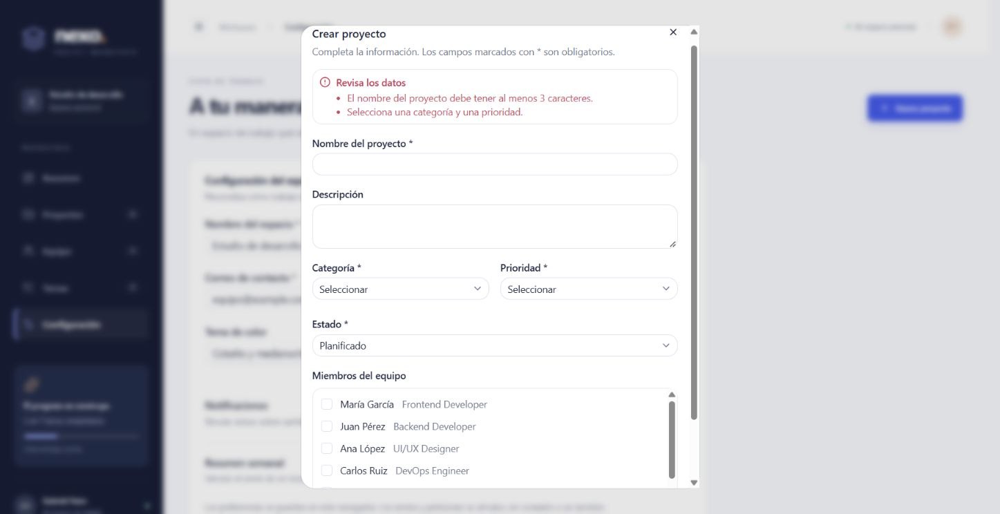
Se implementó el CRUD de miembros con todos los campos solicitados: userId, role, name, email, position, birthdate, phone, projectId e isActive. El identificador se genera automáticamente. Se comprueba formato de correo, duplicados, teléfono y fecha de nacimiento anterior a hoy. El proyecto principal y la pertenencia a equipos se mantienen relacionados. Eliminar un miembro conserva las tareas, pero las deja sin responsable.
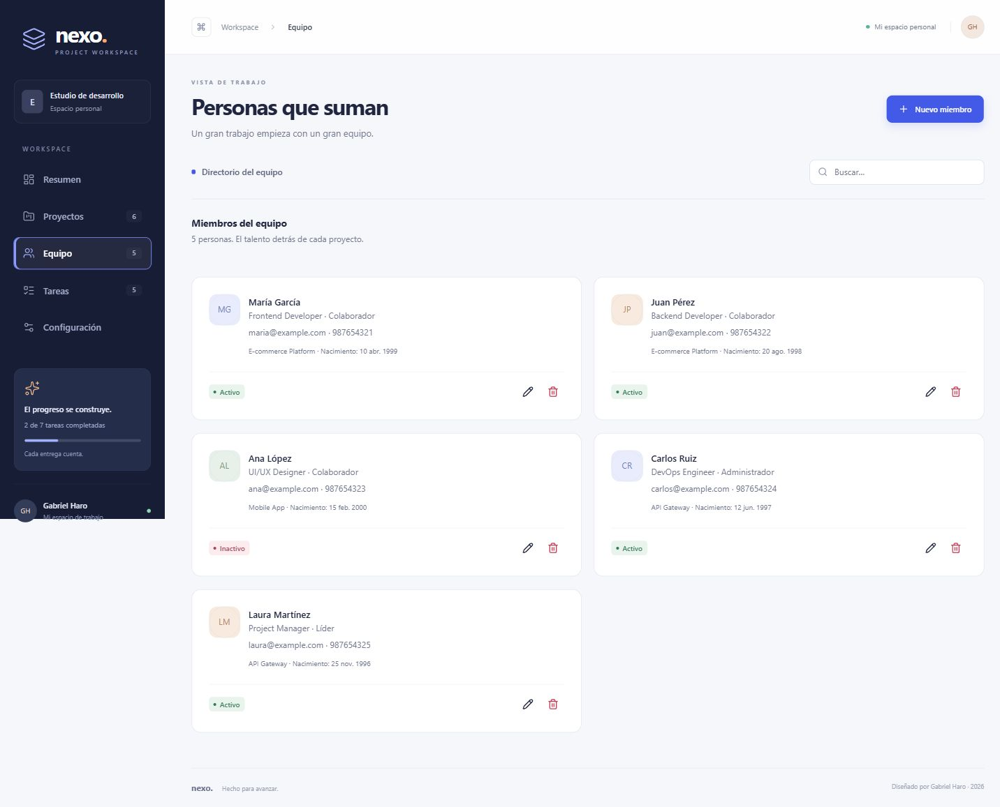
Se implementó el CRUD con description, projectId, status, priority, userId y dateline. Se utiliza projectId como nombre canónico del campo escrito prjectId en la guía. El responsable debe pertenecer al proyecto seleccionado. Hay búsqueda, filtro de estado, selección de filas y paginación real. La segunda página muestra los registros 6 y 7 de los siete iniciales; el tamaño puede cambiarse a 5, 10 o 20.
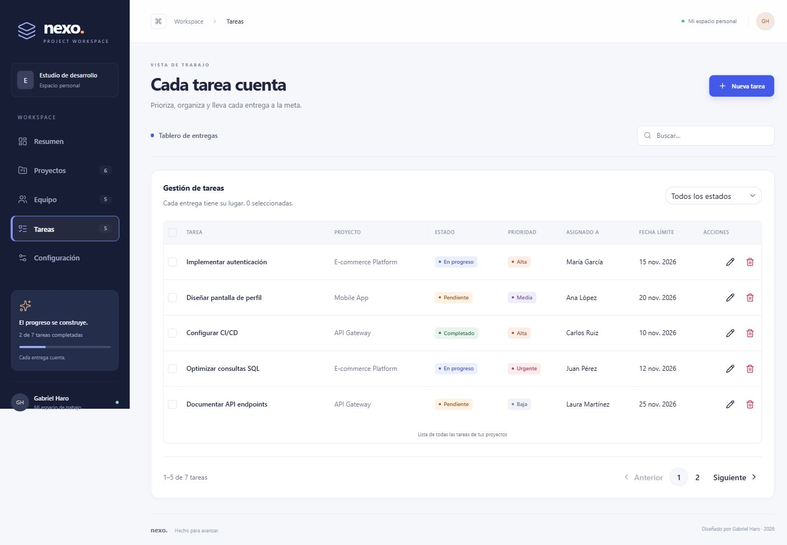
Calendar se utiliza para fecha de nacimiento y fecha límite, con selección de día, mes y año. Las operaciones de guardado y eliminación simulan una petición de 700 milisegundos con Spinner y bloqueo de envíos repetidos. Alert muestra validaciones y confirmaciones de guardado. No se conecta un backend real, conforme a la simulación solicitada.
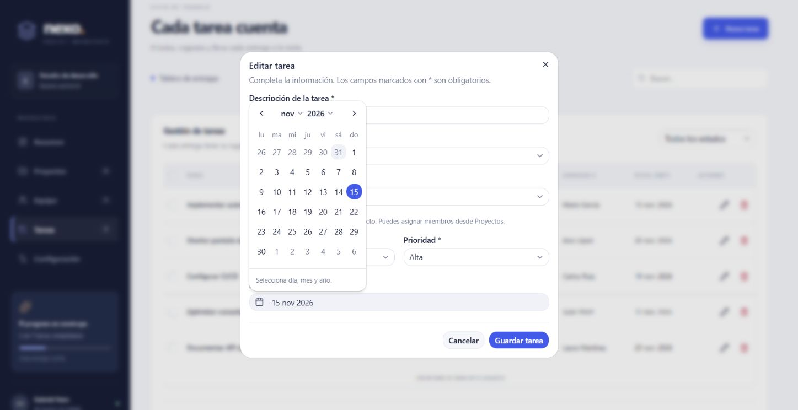
Configuración guarda el nombre del espacio, correo, tema de color, tamaño de página, notificaciones y resumen semanal. El tema y la paginación se aplican a la interfaz; las preferencias de envío son simuladas. Resumen calcula proyectos, tareas completadas, tareas pendientes y miembros activos a partir de los datos actuales. El avance general es completadas dividido entre total de tareas; los datos iniciales producen 6 proyectos, 2 tareas completadas, 5 pendientes, 4 miembros activos y 29 % de avance. No se presentan horas trabajadas ficticias porque no existe un registro de horas.
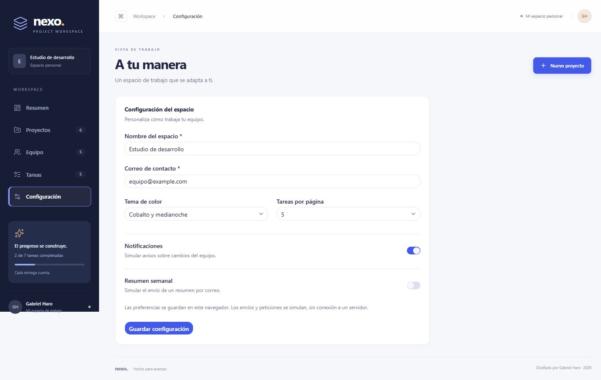
Los registros viven en memoria y además se conservan en localStorage bajo la clave lab11-nexo-v1. Recargar conserva los cambios en el mismo navegador. No existe una base de datos compartida entre usuarios. Al cambiar relaciones se evitan referencias a miembros o proyectos inexistentes. Los identificadores se generan con crypto.randomUUID y los porcentajes se calculan desde las tareas.
Ambas aplicaciones respondieron HTTP 200 y completaron npm run build y npm run lint. Las nueve pruebas npm test verificaron métricas, creación y edición de proyectos, validaciones y fechas, CRUD de miembros, CRUD de tareas, pertenencia del responsable, eliminación en cascada, limpieza de responsables y retiro de miembros de proyectos. En navegador se verificaron CRUD de proyectos, miembros y tareas, persistencia tras recargar, paginación, actualización de métricas, calendario y guardado de configuración. En la galería se verificaron error de correo, carga simulada y alerta de envío válido. Se completó la revisión del dashboard publicado con viewport de 390 × 844: el ancho del documento fue 375 px frente a 390 px de viewport, sin desbordamiento horizontal de la página. Se añadieron capturas de Resumen, Proyectos y el árbol de componentes UI en GitHub.
Dashboard publicado y verificado en Vercel: https://nexo-lab11.vercel.app/dashboard. Se comprobó la carga del dashboard en producción. Galería de componentes publicada y verificada: https://componentes-lab11.vercel.app/styling. Ambas aplicaciones se desplegaron desde el mismo repositorio utilizando su carpeta raíz correspondiente.
Guía GLAB-S11-EAREVALO-2026-1 del docente Edwin William Arévalo Sermeño.
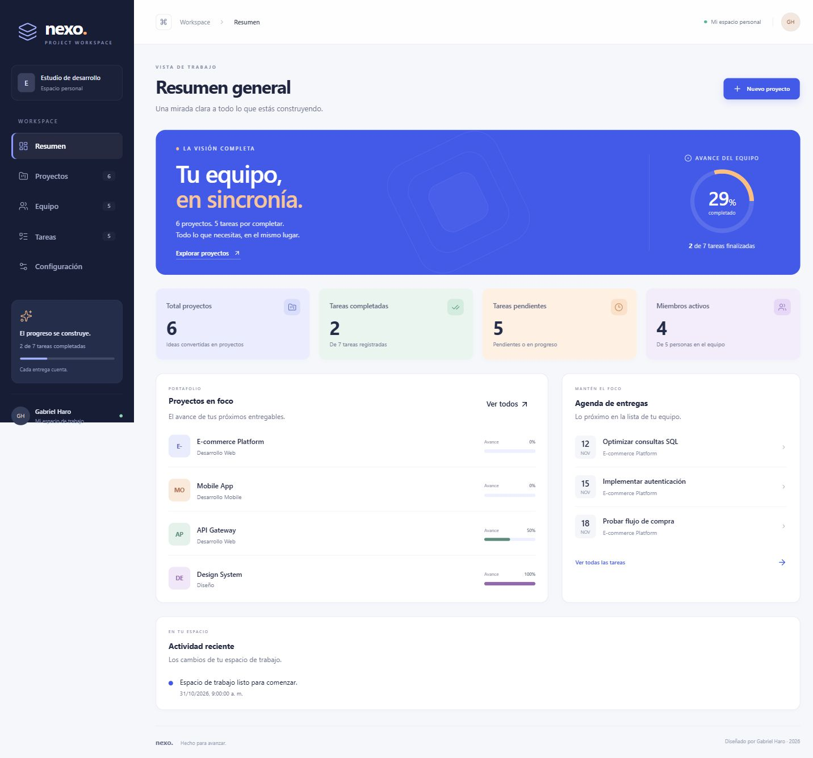
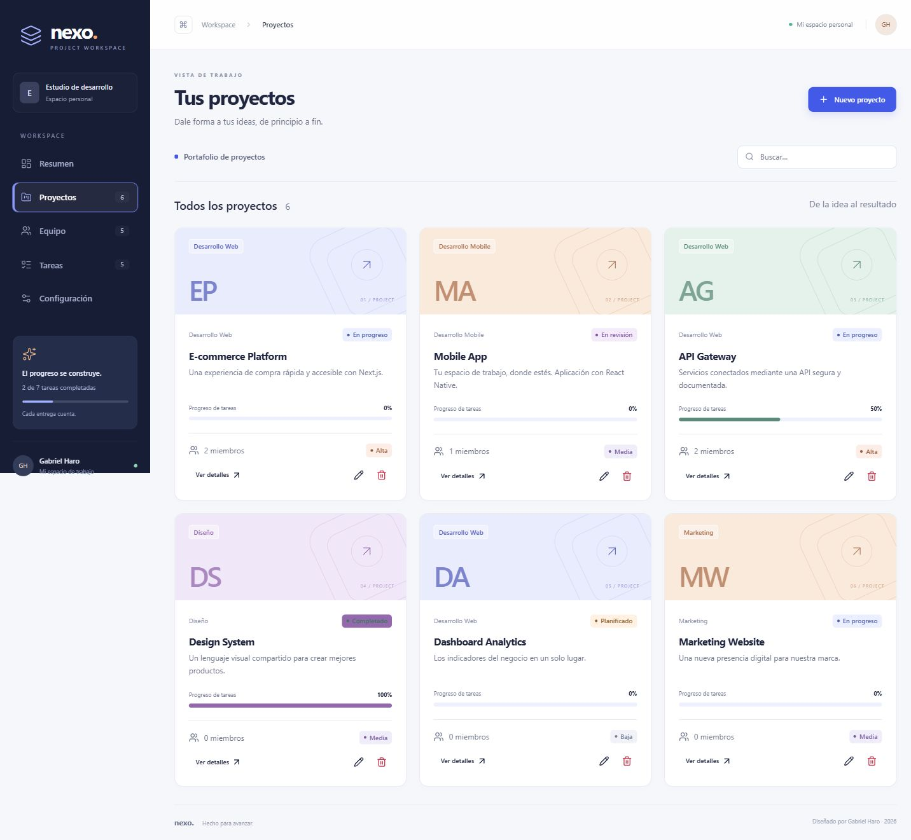
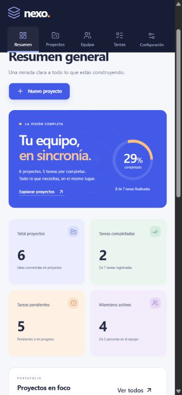
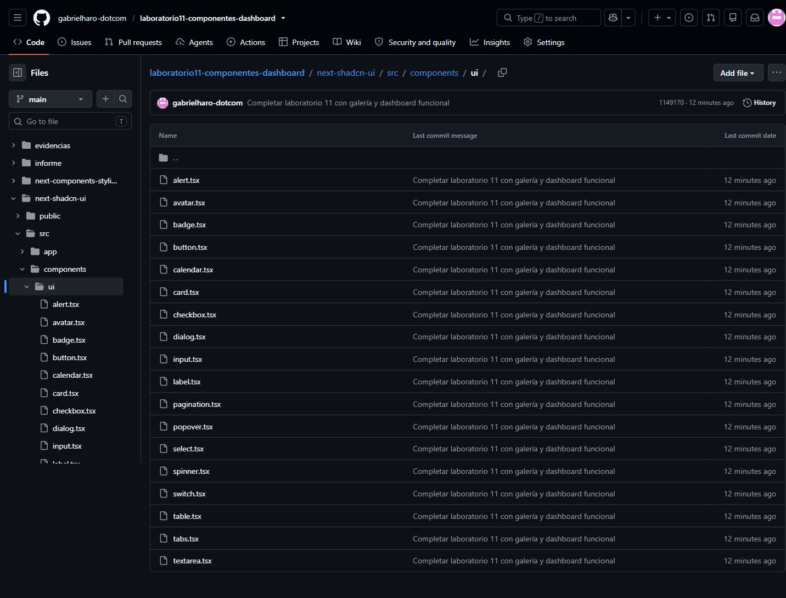
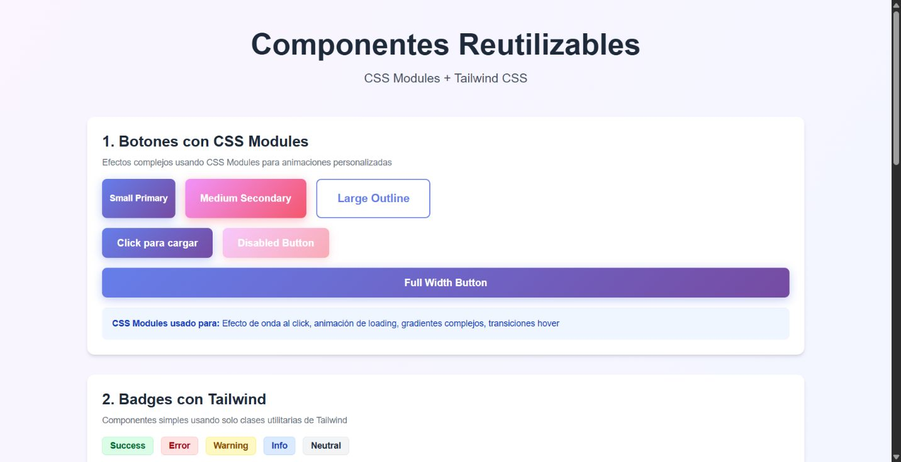
El dashboard se rediseñó con una estructura distinta del ejemplo de la guía. La barra lateral contiene navegación, contadores y progreso; el resumen incorpora portada gráfica, métricas diferenciadas y agenda real de entregas. Los proyectos tienen portadas geométricas y el equipo se presenta como un directorio de tarjetas. Los colores de estado distinguen progreso, pendientes, completados y prioridad. En móvil la navegación cambia a una barra superior y las tarjetas se reorganizan. Se mantuvieron las funciones del laboratorio y la persistencia de los registros.
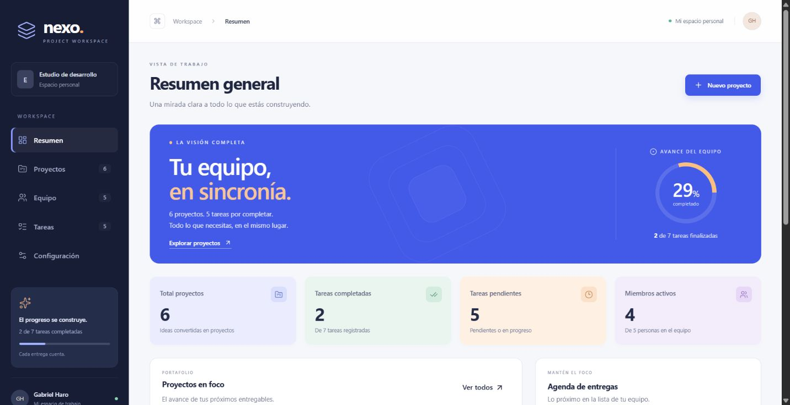